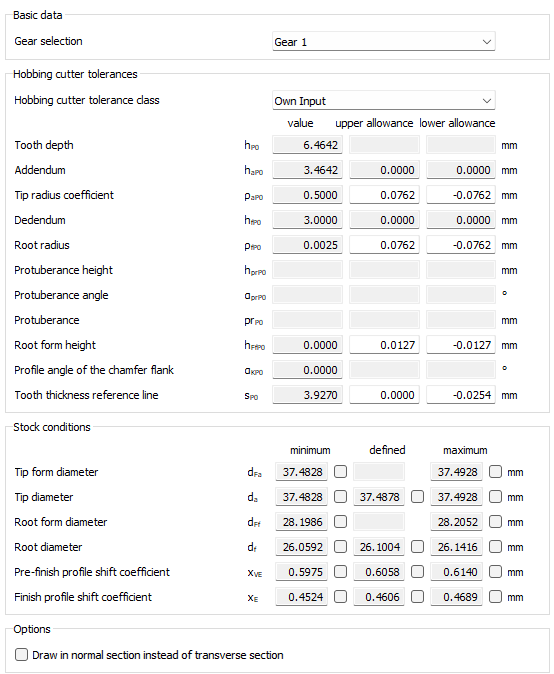

|
|
|


用户界面设置
选项卡分为以下主要部分：
布局如下图所示（见图 15.89）。各个部分和功能将在以下章节中说明。

图 15.89：Rollout 选项卡
English Original
User interface settings
The tab is divided into the following main sections:
The layout is shown in the below figure (see Figure 15.89). The indiviual sections and functions are explained in the following chapters.
Figure 15.89: Rollout tab